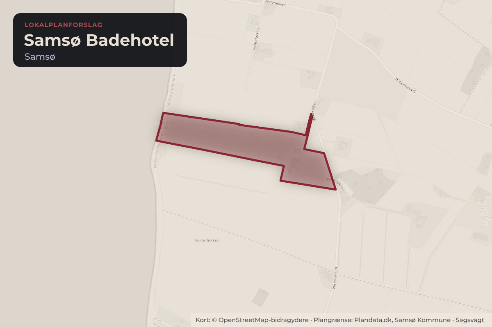
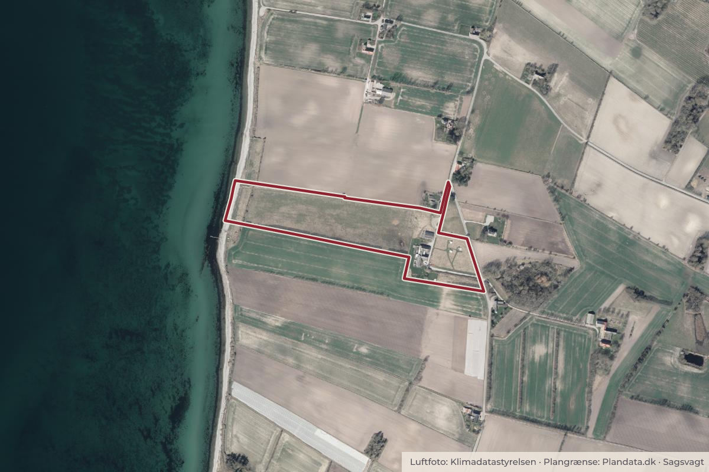

Besluttet 29. september, Økonomiudvalget, Samsø
Forslag til Lokalplan nr. 94 - Samsø Badehotel - TU-ØU-KB
Forvaltningen fremstiller forslag til Lokalplan nr. 94 - Samsø Badehotel efter den offentlige høring. De indkomne høringssvar behandles og planen indstilles til endelig godkendelse. Løsningsmuligheder og indstilling 1.

Kort: © OpenStreetMap-bidragydere. Plangrænse: Plandata.dk, Samsø Kommune.

Kort fortalt
- Hvem
- Økonomiudvalget, Samsø Kommune
- Hvornår
- Tirsdag 29. september 2026
- Status
- Besluttet. Teknik- og Miljøudvalgets indstilling anbefales godkendt.Beslutningen er forkortet her. Læs hele beslutningen
Læs hele sagen Kommunens egen tekst
Problemstilling
Forvaltningen fremstiller forslag til Lokalplan nr. 94 - Samsø Badehotel efter den offentlige
høring. De indkomne høringssvar behandles og planen indstilles til endelig godkendelse.
Løsningsmuligheder og indstilling
1. Forslag til Lokalplan nr. 94 - Samsø Badehotel godkendes endeligt med ændringer som
anbefalet af forvaltningen i sagsfremstillingen.
2. Forslag til Lokalplan nr. 94 - Samsø Badehotel tilrettes med andre specifikke ændringer
som besluttet på mødet og godkendes endeligt.
3. Planforslaget returneres til fornyet behandling i forvaltningen.
Chefen for Teknisk Forvaltning indstiller, at forslag til Lokalplan nr. 94 - Samsø Badehotel
godkendes endeligt med ændringer som anbefalet af forvaltningen i sagsfremstillingen
(Løsningsmulighed 1).
Sagsfremstilling
Kommunalbestyrelsen har den 16. juni 2026 godkendt forslag til Lokalplan nr. 94 - Samsø
Badehotel, og planforslaget har efterfølgende været i offentlig høring fra 24. juni til 22. juli
2026. Formålet med lokalplanforslaget har været, at muliggøre en mindre udvidelse af det
eksisterende hotel, bl.a. med ti glampingtelte og otte hytter til feriegæster, samt seks hytter til
personale. Lokalplanen vil erstatte den eksisterende Lokalplan nr. 71 som muliggør en markant
større udvidelse af hotellet.
Arbejdet med at revidere plangrundlaget for badehotellet ved Ilse Made Hotel blev opstartet i
2020, men har ligget helt stille i flere perioder undervejs. Det skyldes dels skiftende
sagsbehandlere på opgaven, dels mangelfuld dialog med virksomheden om de ønskede
ændringer. I 2025 blev dialogen med virksomheden genoptaget og forvaltningen fremstillede
på den baggrund, et forslag til en ny lokalplan for badehotellet ved Ilse Made, som blev
godkendt til offentlig høring af Kommunalbestyrelsen på mødet den 16. juni 2026.
Lokalplanarbejdet blev igangsat med henblik på, at tilpasse plangrundlaget til de ønskede
anvendelsesmuligheder. Den gældende Lokalplan nr. 71 er meget fastlåst i
udvidelsesmulighederne fordi den blev udarbejdet med henblik på et konkret større nybyggeri,
der imidlertid aldrig blev realiseret.
De nuværende ejere ønsker et mere fleksibelt plangrundlag og en bredere vifte af muligheder
som virksomheden i dag ønsker at realisere.
Forvaltningen peger særligt på disse temaer og ændringer i forhold til den gældende lokalplan,
der aflyses ved den endelige godkendelse af den nye lokalplan:
Den gældende lokalplan er udarbejdet for at muliggøre et konkret projekt, med en markant
udvidelse af hotellets hovedbygning bl.a. med en lang værelsesfløj mod nord og vest i to fulde
etager. Denne bebyggelse ville fremstå meget markant i landskabet, og tage sig ud med en
meget lang og høj facade set fra kysten.
Den nye lokalplan muliggør i stedet to grupper af mindre hytter, otte til gæster placeret omtrent
hvor den gældende lokalplan tillod udvidelsen og seks hytter til personale placeret bag ved
eksisterende bebyggelse og beplantning set fra kysten. Herudover tillader lokalplanen at der
placeres op til ti glampingtelte, også bag den eksisterende bebyggelse set fra kysten.
Herved vil den nye lokalplan bibringe til en mere åben struktur i området, som forventes at
virke mindre markant i kystlandskabet.
Offentlig høring
Planforslaget har været i 4 ugers offentlig høring i perioden 24. juni til 22. juli 2026.
I høringsperioden modtog Teknisk Forvaltning 2 høringssvar. Lokalplanforlaget blev desuden
påklaget til planklagenævnet, som dog afviste klagen, da den ikke berørte retslige spørgsmål.
Forvaltningen har derfor valgt at medtage og behandle klagen som et høringssvar.
Høringssvarene berørte bl.a. følgende emner:
Anvendelse af lokalplanforslagets delområde D til dyrehold.
Risiko for gener for naboerne ved den nye bebyggelse.
Hotelanvendelsen i lokalplanen set i forhold til kommuneplanens retningslinjer.
Overholdelse af parkeringsnormen i området.
Høringssvarene i deres helhed er samlet i et dokument, ligeledes er forvaltningens vurdering af
høringssvarene samlet i en hvidbog. Begge dokumenter er vedlagt sagen som bilag.
På baggrund af høringssvarene anbefaler forvaltningen følgende ændring i lokalplanforslaget:
1. At § 3.5 ændres til følgende ordlyd:
"Delområdet må ikke bebygges og der må ikke etableres nogen form for anlæg. Arealet
kan anvendes som et rekreativt naturområde med ekstensiv pleje, dog vil hegn og øvrige
tilstandsændringer forudsætte dispensation fra strandbeskyttelseslinjen. Eksisterende
lovlig anvendelse af arealet kan fortsætte."
Bilag til sagen:
Forslag til Lokalplan nr. 94 for Samsø Badehotel
Samlede høringssvar til Lokalplanforslag nr. 94 Samsø Badehotel
Hvidbog med faglig vurdering af høringssvar til Lokalplanforslag nr. 94 Samsø Badehotel
Økonomi og personale
Løsningsmulighederne har ingen budgetmæssige konsekvenser.
Planlægningen foretages indenfor Teknik og Miljøs budget.
Tidligere beslutninger
16.06.2026, KB-sag nr. 147: Forslag til Lokalplan nr. 94 - Samsø Badehotel - TU-ØU-KB
08.06.2022, TU-sag nr. 96: Foretræde vedr. Samsø Badehotel - TU
23.09.2020, TU-sag nr. 395: Anmodning om lokalplanlægning for Hotel Ilse Made - TU
Dialog og høringer
Lokalplanen er udarbejdet i dialog og samarbejde med virksomheden.
Planforslaget har været i 4 ugers offentlig høring i perioden 24. juni til 22. juli 2026.
Høringssvar fra perioden behandles i sagsfremstillingen.
Behandling i Teknik- og Miljøudvalget 23. september 2026
Udvalget indstiller, at forslag til Lokalplan nr. 94 - Samsø Badehotel godkendes endeligt med
ændringer som anbefalet af forvaltningen i sagsfremstillingen (Løsningsmulighed 1).
Beslutning
Fraværende: Anita Elgaard Højholt Olesen (afbud)
Teknik- og Miljøudvalgets indstilling anbefales godkendt.
Kilde: Samsø Kommune, Økonomiudvalget, referat fra mødet tirsdag 29. september 2026, punkt 11. Læs den originale sag hos kommunen.